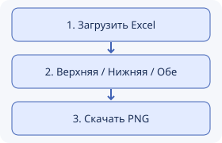

Из Excel — в чат группы
В чат опять прилетел Excel, и теперь вторую пару надо найти среди объединённых ячеек. План Экспарса простой: выбираешь верхнюю, нижнюю или обе недели и забираешь картинку для группы.
ЛР 2 · пока знакомимся с HTML и смотрим пример. Читать Excel и делать PNG научимся дальше. Легендой группы становимся постепенно.
Три шага до картинки
- Загрузить Excel с расписанием — тот самый, из чата
- Выбрать верхнюю, нижнюю или обе недели и перестать их путать
- Скачать всю неделю картинкой и отправить группе. Минутка славы обеспечена
Варианты недели:
- Верхняя — занятия из верхних блоков и общие пары
- Нижняя — занятия из нижних блоков и общие пары
- Обе — различия видны рядом, общие занятия показаны один раз
Загрузить Excel
Выбери файл и неделю — браузер проверит заполнение формы. Сам Excel пока не читаем: это следующий уровень. На экране учебный пример.
Пример расписания
КИ-24.xls · обе недели. Выбор в форме пока не меняет таблицу. Общие занятия показаны один раз, свободная половина подписана «Окно». Можно выдохнуть.
| День | Пара | Верхняя неделя | Нижняя неделя |
|---|---|---|---|
| Понедельник | 2 | Психология · лекция · 9.413 | Веб-технологии · лекция · 4.014 |
| 3 | Операционные системы · лекция · 2.234 | ||
| 4 | Программирование интерфейсов вычислительных систем · лабораторная · 4.023 | Программирование интерфейсов вычислительных систем · практика · 4.023 | |
| Вторник | 2 | Компьютерные системы · лабораторная · 4.026 | |
| 3 | Операционные системы · лабораторная · 4.024 | ||
| 4 | Окно | ||
| 5 | Профессионально-прикладная физическая подготовка · практика · аудитория не указана | ||
| Среда | 2 | Специализированные компьютеры · лекция · 2.234 | Окно |
| 3 | Организация и функционирование процессорных устройств · лекция · 4.035 | ||
| 4 | Специализированные компьютеры · лабораторная · 4.040 | ||
| Четверг | 2 | Компьютерные системы · лекция · 2.234 | |
| 3 | Цифровая схемотехника специализированных устройств КС · лекция · 4.035 | Веб-технологии · лабораторная · 4.019 | |
| 4 | Организация и функционирование процессорных устройств · лабораторная · 4.014 | Окно | |
| 5 | Веб-технологии · лабораторная · 4.019 | Окно | |
| Пятница | 1 | Программирование интерфейсов вычислительных систем · лекция · 4.014 | |
| 2 | Веб-технологии · лекция · 4.014 | Психология · практика · 8.212 | |
| 3 | Цифровая схемотехника специализированных устройств КС · лабораторная · 4.031 | ||
Расписание звонков
Понедельник — пятница
- 1 пара
- —
- 2 пара
- —
- 3 пара
- —
- 4 пара
- —
- 5 пара
- —
- 6 пара
- —
- 7 пара
- —
Из Excel — в чат группы
